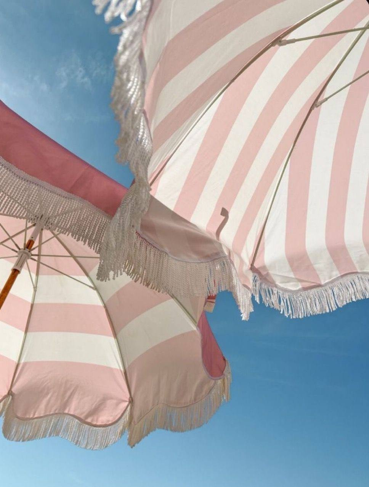

YOGA WITH KATE
Enjoy the vibe
Жизнь течёт изнутри наружу. Силы и внутренняя гармония, здоровое тело и спокойный ум — то, что даёт регулярная практика. Начните сейчас.
Смотреть отзывы



Йога для меня — это про состояние. С практикой мы становимся более энергичными и настоящими, развиваем чувствительность, подвижность, силу, гибкость и учимся управлять вниманием.
«С нетерпением жду каждую новую тренировку. Екатерина — очень чуткий, внимательный и заботливый тренер, помнит обо всех деталях».
«Нравится сбалансированность тренировок — они позволяют развить силу, гибкость и чувство баланса».
«У Екатерины очень особенные занятия. Для меня это всегда челлендж и рост — как физический, так и ментальный».

«Все занятия не только про внутренний стержень. Они очень женственные и наполняющие».

Чтобы хорошо работать, нужно хорошо отдыхать. Я провожу выезды, где люди отдыхают телом и душой, проводят время без гаджетов, узнают себя и друг друга с новых сторон и возвращаются к делам довольными и энергичными.
Вместе обсуждаем ваши цели и пожелания. Количество людей, их интересы, состояние, любимые места для отдыха — всё это формирует основу программы.
Загородный дом, отель или природная локация — формат подбираем под запрос.
Обязательно включаем работу с телом — йога, зарядка, дыхательные практики.
Исследуем природу вокруг, дышим чистым воздухом, посещаем спокойные локации.
Работа с дыханием, глубокое расслабление и внимание к телу каждый день.
Разнообразное и здоровое питание, свежие продукты, травяной чай.
Разбор философии и первоисточников практики, время на разговоры и тишину.
Меня зовут Екатерина, я практикую йогу более 8 лет и преподаю классическую хатха-йогу в Санкт-Петербурге. Постоянно учусь — курсы, семинары, разбор первоисточников. Веду телеграм-канал «Благие мысли», где честно пишу про практику и жизнь на коврике. Считаю, что правильный баланс между работой и отдыхом — основа гармонии. Рада делиться всеми инструментами, которые применяю сама.